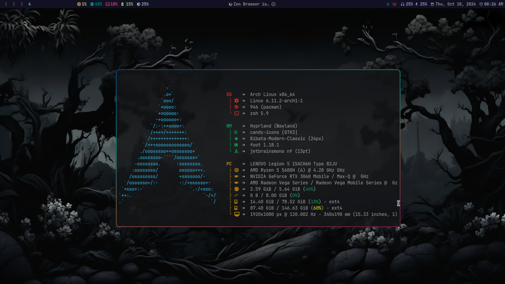
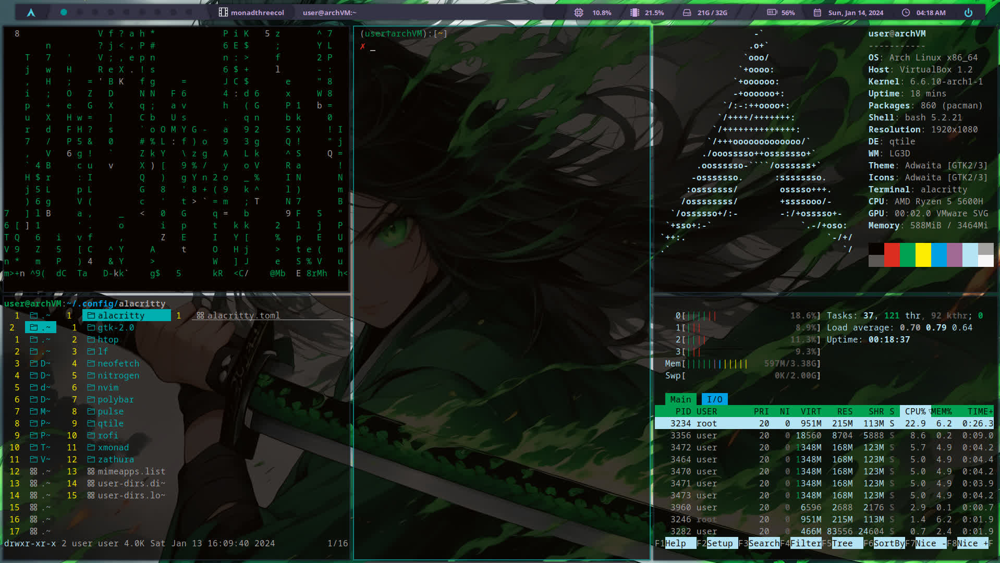
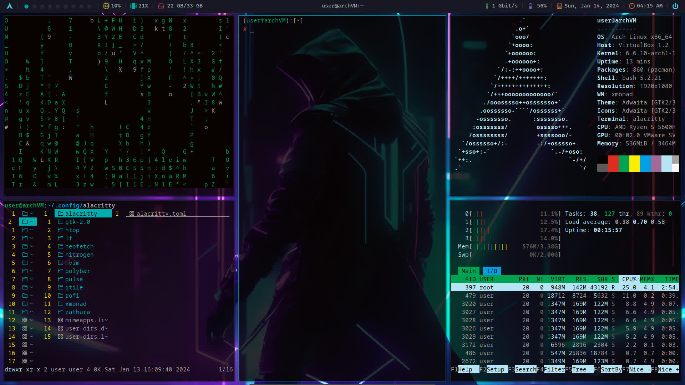
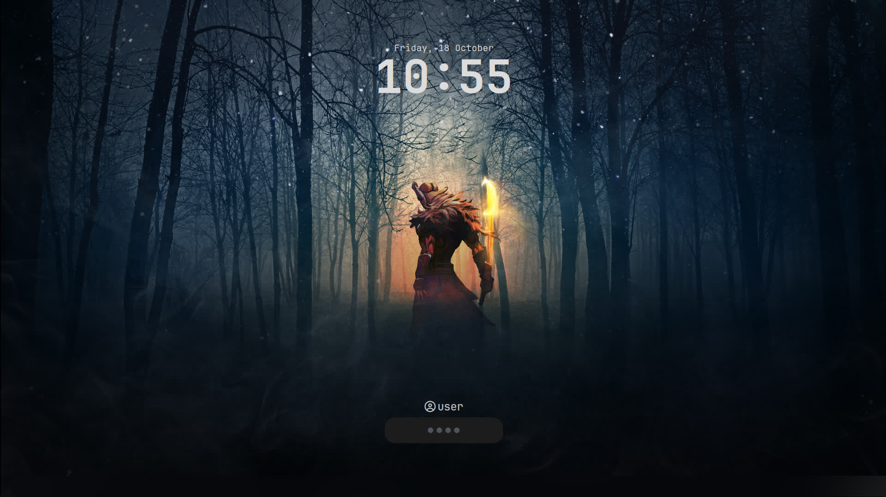
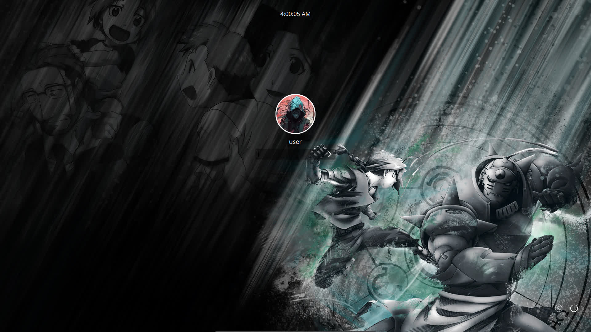
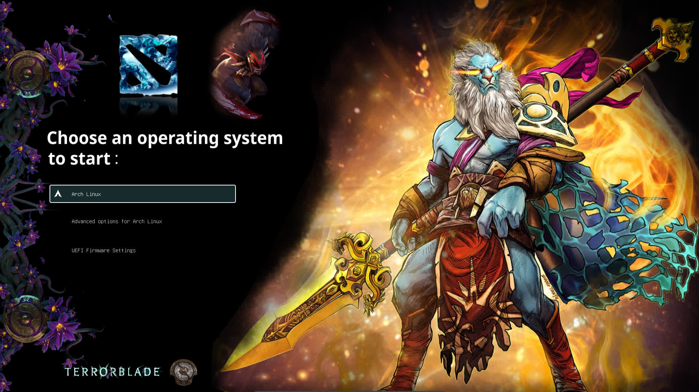

Dotfiles
| Window Manager | Hyprland Xmoand Qtile |
| Compositor |
| Hyprland |
| Picom |
| Teminal Emmulator |
| Foot |
| Simple Terminal |
| Alacritty |
| Kitty |
| Wezterm |
| Urxvt |
| Xterm |
| Shell |
| Zsh |
| Bash |
| Text Editor |
| Neovim |
| Emacs |
| Zed |
| Status Bar |
| Waybar |
| Polybar |
| Xmobar |
| Qtilebar |
| Launch Menu |
| Wofi |
| Rofi |
| Display Manager |
| Lightdm |
| Sddm |
| Ly |
| Lock Screen |
| Hyprlock |
| I3lock |
| Terminal tools |
| Tmux |
| Bat |
| Fastfetch |
| File Manager |
| Yazi |
| Lf |
| Multimedia |
| Zathura |
| Vimiv |
| Browsers |
| Firefox |
| QuteBrowser |
| ZenBrowser |
Hyprland
sudo pacman -S --noconfirm --needed hyprland wofi waybar swww

Qtile
sudo pacman -S --noconfirm --needed qtile python-psutil python-iwlib nitrogen picom rofi

Xmonad
sudo pacman -S --noconfirm --needed xmonad xmonad-contrib polybar picom nitrogen rofi

Hyprlock
sudo pacman -S --noconfirm --needed hyprlock

Sddm
sudo pacman -S --noconfirm --needed sddm

Grub
sudo pacman -S --noconfirm --needed grub efibootmgr os-oprober
Grub Theme is from https://github.com/YujanSubedi/Dota_grub_theme

Setup on Arch
git clone https://github.com/YujanSubedi/dotfile
cd dotfile
./install.sh
Sudo require password everytime: /etc/sudoers
Defaults timestamp_timeout=0
No login on tty1: "sudo systemctl edit getty@tty1.service"
[Service] ExecStart= ExecStart=-/usr/bin/agetty --autologin <User_Name> --noclear %I $TERM
Autorun Window Manager on tt1: ~/.bashprofile
[[ -z $DISPLAY && $XDG_VTNR -eq 1 ]] && exec startx # For Xserver based WM, requires .xinitrc
[[ -z $DISPLAY && $XDG_VTNR -eq 1 ]] && exec Hyprland # For Hyprland
Handling Power buttom: /etc/systemd/logind.conf
Grub theme: /etc/default/grub
GRUB_THEME="/boot/grub/themes/DanHeng/theme.txt"
Nvidia driver:
/etc/modprobe.d/nvidia.conf
options nvidia_drm modeset=1 fbdev=1
/etc/mkinitcpio.conf
MODULES=(amdgpu nvidia nvidia_modeset nvidia_uvm nvidia_drm)